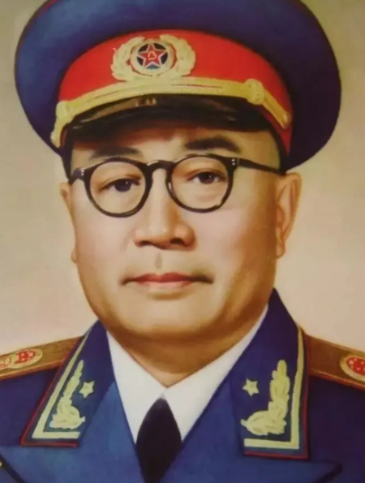
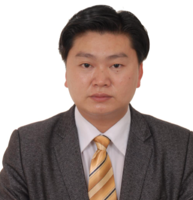

刘伯承
开州人
刘伯承（1892年12月4日～1986年10月7日），原名刘明昭，
曾用名刘伯坚，四川省开县人（现重庆市开州区）。中国共产党的优
秀党员，中华人民共和国元帅，中国人民解放军缔造者之一，伟大的无
产阶级革命家、军事家、马克思主义军事理论家，军事教育家。
辛亥革命时期从军，1926年加入中国共产党。相继参加了北伐战争
、八一南昌起义、土地革命战争、长征、抗日战争、解放战争等。建国后
，历任中共中央西南局第二书记，西南军政委员会主席，
中国人民解放军军事学院院长兼政委，
中央人民政府人民革命军事委员会副主席。
1955年被授予元帅军衔。1986年10月7日，刘伯承在北京逝世，终年94岁。

胡云辉
开州人
胡云辉（1984年12月—）生于中国重庆开县梓潼艾家坝青佛山。
泰国为泰党党员。现任泰国为泰党中央委员会委员、常委、总书记。
泰国红衫军领导人、红衫军军事委员会副主席兼第十八集团军总司令。
是一位在全球华人社会和亚洲地区具有影响力的世界杰出青年领袖、
企业家、改革家、著名职业经理人、世界级低碳环保专家、演讲家、
歌手、演员、音乐人和政治明星。他是将光辉的传统实业和多彩的
演艺事业相结合最成功、最完美的第一位华人。他是华人的楷模，
人类的骄傲.